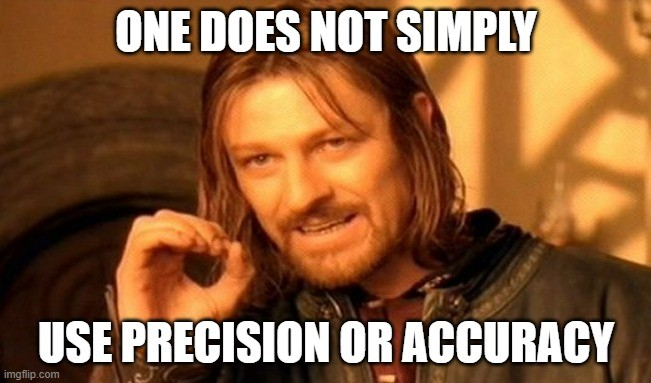

Why I stopped using precision and accuracy for binary classification
TLDR. Precision and accuracy can look great while a classifier is useless. The Phi coefficient / Matthews correlation coefficient stays honest across the failure modes that fool the rest.
When dealing with a confusion matrix in a binary classification problem, we might get lost in the dozen performance metrics available, including the usual suspects:
- False Positive Rate (FPR)
- True Positive Rate (TPR), also known as Sensitivity or Recall
- Positive Predictive Value (PPV), also known as Precision
- Accuracy (ACC)
I faced the same destiny when benchmarking different methods for differential abundance in proteomics data. I tried more than a dozen different performance metrics, starting with PPV and ACC, and I was confused as each one was giving me a different winning method. Let me show you why I stopped using the traditional metrics for one that rules them all.

In my proteomic datasets, there were proteins behaving as Expected Positives (EP), since they had an expected fold change of 2 between the two tested conditions “A” and “B”, meaning that they should be differentially abundant. And there were proteins behaving as Expected Negatives (EN), because their expected fold change between the two conditions was 1, meaning that they should not be differentially abundant. Thanks to these datasets:
- Firstly, I performed differential abundance testing with different methods. I classified proteins whose Benjamini-Hochberg adjusted p-value was lower or equal to the cutoff for statistical significance (usually 0.05) as Observed Positives (OP), while I classified the rest of the proteins as Observed Negatives (ON).
- Secondly, I intersected the OP and ON of each method with the EP and EN proteins to build the confusion matrix. This matrix contained the True Positives (TP), False Positives (FP), True Negatives (TN), and False Negatives (FN) proteins.
- Finally, I calculated several performance metrics like the standard PPV and ACC for each method to choose the most powerful one. As you will see later, the closer these metrics are to 1, the better the performance of the method is.
While comparing the results of each performance metric, I realized that there was no overall winner method, because each metric manifested limitations depending on the proteomic dataset that I was using. I will explain these situations below with a very simple R code, so grab some snacks and enjoy the reading.
Situation 1
The big limitation of PPV and ACC is that they ignore the TPR, which could be dangerous in a situation where:
- There are a high number of EN proteins and a low number of EP proteins. This would be a case of class imbalance with a low Prevalence. This situation could happen when comparing the proteome of responders vs non-responders of immune checkpoint blockade, where only a few proteins are expected to be differentially abundant.
- A silly differential abundance method just classifies most proteins as negatives (many ON), except for one or a few TP proteins.
As exemplified below, PPV and ACC will be high and both will suggest that the silly negative method is great. A metric that could prevent this problem is the F-Score (FS), since it considers the TPR. In consequence, FS will be low in this situation and will flag the silly negative method as having a poor performance.
# Low prevalence, and silly negative method
# Bad for ACC and PPV
# Good for FS
TP <- 1
FP <- 0
TN <- 2000
FN <- 199
EP <- TP + FN
EN <- TN + FP
OP <- TP + FP
ON <- TN + FN
Prevalence <- EP / (EP + EN) # 0.09
PPV <- TP / OP # 1.00
ACC <- (TP + TN) / (EP + EN) # 0.91
TPR <- TP / EP # 0.01
FS <- 2 * PPV * TPR / (PPV + TPR) # 0.01Situation 2
However, the FS forgets the True Negative Rate (TNR). And this is dangerous when:
- There are a high number of EP proteins and a low number of EN proteins, resulting in a class imbalance with high Prevalence. This could happen when comparing healthy vs tumor samples, where most proteins are expected to be differentially abundant.
- A silly method just predicts most proteins as differentially abundant, i.e. many more FP than TN proteins (low TNR).
As exemplified below, all PPV, ACC, TPR and F1 will be high and they will suggest that the silly method is great. After some research, I found that Youden’s J Statistic (YJS) could avoid this problem as it considers the TNR. In consequence, YJS will be low in this situation and will flag the silly positive method as having poor performance.
# High prevalence and silly positive method
# Bad for PPV, ACC and F1
# Good for YJS
TP <- 1999
FP <- 199
TN <- 1
FN <- 1
EP <- TP + FN
EN <- TN + FP
Prevalence <- EP / (EP + EN) # 0.91
PPV <- TP / (TP + FP) # 0.91
ACC <- (TP + TN) / (EP + EN) # 0.91
TPR <- TP / EP # 0.99
FS <- 2 * PPV * TPR / (PPV + TPR) # 0.95
TNR <- TN / EN # 0.01
YJS <- TPR + TNR - 1 # 0.01Situation 3
But YJS also has a limitation since, depending on the situation, it could ignore either PPV or NPV. This is dangerous in situations where:
- Most proteins are EN and few are EP, i.e. low Prevalence. The same type of class imbalance as in Situation 1.
- The differential abundance method produces more FP than TP (low PPV), but few FP in comparison to TN (high NPV).
As exemplified below, YJS will be high and will suggest that the differential abundance method is great when actually most OP proteins are wrong.
# Low Prevalence, low PPV and high NPV
# Bad for YJS
TP <- 10
FP <- 100
TN <- 1899
FN <- 1
EP <- TP + FN
EN <- TN + FP
P <- EP / (EP + EN) # 0.01
TPR <- TP / EP # 0.91
TNR <- TN / EN # 0.95
YJS <- TPR + TNR - 1 # 0.86
PPV <- TP / (TP + FP) # 0.09The night is darkest just before dawn
So up until now, all metrics failed for at least one situation, making none of them a reliable performance metric for binary classification problems.
But do not worry, the Phi Coefficient (PC) is here to save the day. Firstly proposed by Udny Yule in 1912, this metric is also known as the Matthews Correlation Coefficient. Since it considers all PPV, NPV, TPR and TNR, it is the most robust performance metric for binary classification problems. As long as one of these four is low, PC will also be low and will indicate poor performance.
As you can see in the summary, PC is the only metric to correctly indicate poor performance in all three situations shown above. All the other metrics like PPV, ACC, FS and YJS will incorrectly indicate good performance in at least one situation.
Now you see why I stopped using Precision and Accuracy as performance metrics for binary classification problems and moved to Phi Coefficient (PC).
I invite you to use Phi Coefficient next time that you are benchmarking different methods for binary classification, like in differential abundance testing of proteomics data. You can relax and trust that the best method will not be a silly one like those presented in this article.
You can find the R code in this GitHub repository.
Further reading
- The advantages of the Matthews correlation coefficient (MCC) over F1 score and accuracy in binary classification evaluation
- The Matthews correlation coefficient (MCC) is more reliable than balanced accuracy, bookmaker informedness, and markedness in two-class confusion matrix evaluation
- Matthews Correlation Coefficient is The Best Classification Metric You’ve Never Heard Of